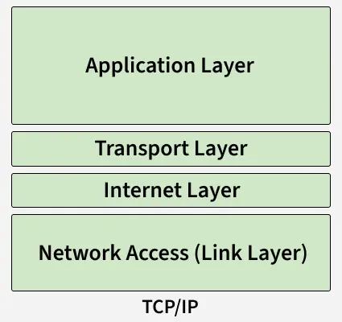
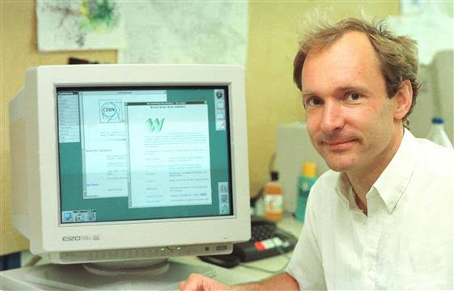
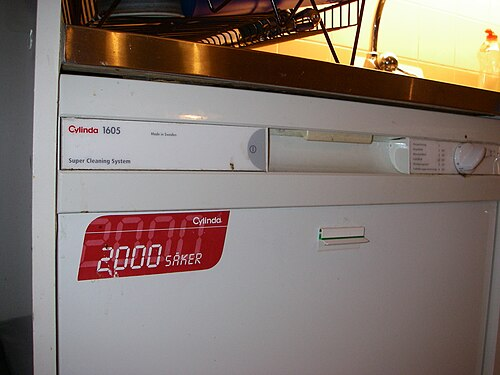
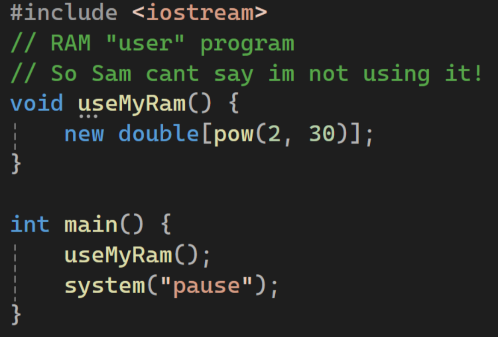

1960 → 2026
ARPANET
År 1962 föreslog J.C.R. Licklider idén om ett "Intergalactic Computer Network", som skulle koppla samman datorer över hela världen.
År 1969 skapades ARPANET, som var ett nätverk som kopplade samman olika datorer på universitet och forskningsinstitut i USA.
Det var en tidig föregångare till det moderna internet och användes främst för att dela information mellan forskare och militärpersonal.
TCP/IP

Under 1980-talet utvecklades TCP/IP-protokollet, som blev standarden för kommunikation över internet.
Detta gjorde det möjligt för olika nätverk att kommunicera med varandra och lade grunden för det moderna internet.
År 1983 bytte ARPANET till TCP/IP, vilket markerade början på en ny era av nätverkskommunikation.
The World-Wide-Web
År 1989 uppfann Tim Berners-Lee idén om det World Wide Web, som var en enkel sätt att dela information över internet.
Han utvecklade också de första webbservern och webbklienterna, vilket gjorde det möjligt för användare att surfa på webben.
Detta var en viktig steg i utvecklingen av internet och gjorde det lättare för människor att komma åt och dela information.

Y2K: Millenniebuggen

År 2000 oroade man sig för att datorer skulle krascha på grund av att datumet ändrade sig från 1999 till 2000.
Detta ledde till att många företag investerade stora summor i att säkerställa att deras system fungerade korrekt.
Idag
Idag är internet en integrerad del av våra liv och används för allt från kommunikation och underhållning till handel och utbildning.
Det har förändrat hur vi arbetar, lär oss och interagerar med varandra, och fortsätter att utvecklas i snabb takt.
